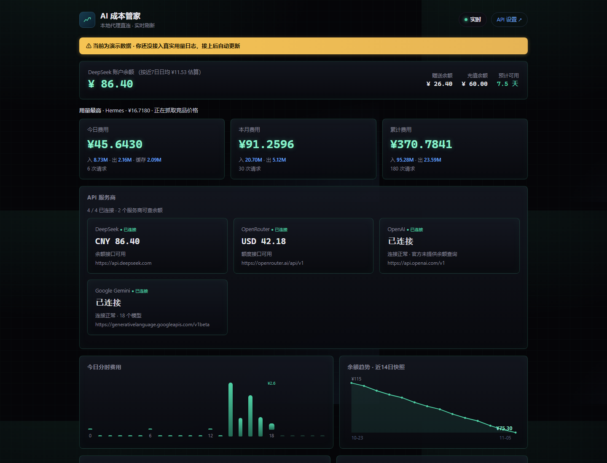
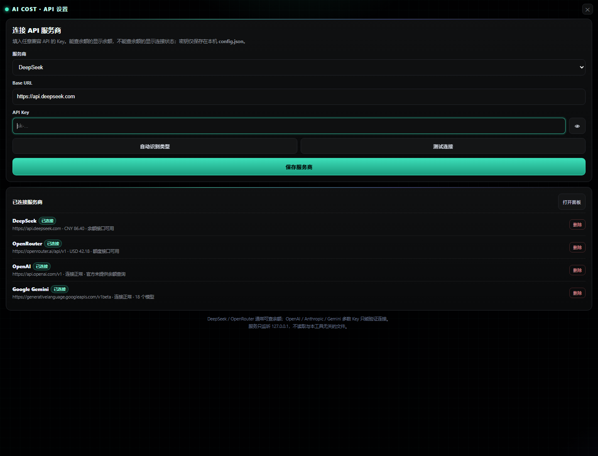

每个 AI API 的钱，
一屏看清。
把 DeepSeek、OpenRouter、OpenAI、Anthropic、Gemini 和自定义接口的 Key 放进一个桌面看板。余额、额度、连接状态、费用趋势和异常提醒，全部在本机完成。

不是简单看个余额，
是把 AI 成本管起来。
从 Key 管理到余额、费用和异常状态，信息都在一个界面里。
多 API Key 管理
自动识别常见 Key 类型，也可以手动选择服务商、修改 Base URL，分别测试并保存。
余额与连接状态
DeepSeek 和 OpenRouter 可直接查询余额；其他服务商显示真实连接与模型状态，不伪造余额。
费用趋势
今日、本月、累计费用，24 小时分时花费，近 7 天与近 30 天趋势一屏展开。
异常与余额告警
费用突然放大、余额可用天数过低、AI 在工作但用量数据断流，都能直接提示。
本地优先
服务只监听 127.0.0.1，Key 和运行数据保存在本机，不走第三方云。
无 Key 演示模式
先看完整界面再决定是否接自己的 Key。演示数据全部合成，不读取真实用量。
哪个 Key 能连、哪里在烧钱，
一眼就知道。
你不需要在多个平台之间来回切换。进入 API 设置，添加你的 Key，回看板就能看到服务商状态和成本趋势。
下载并解压
双击 AICostManager.exe，Windows 直接运行。
添加 API
选择服务商、粘贴 Key、点测试连接，再保存。
打开看板
余额、连接状态、成本趋势和告警自动刷新。

你的 Key，只在你的电脑里。
桌面应用只监听本机回环地址，不上传 Key，不依赖云端账号。
127.0.0.1
本地 HTTP 服务只绑定回环地址，外部网络无法访问。
Key 本地保存
API Key 写入本机 config.json，分享文件夹前请勿把填过 Key 的配置发出去。
无静默上传
程序只访问你配置的 API 官方接口；没有埋点、账号系统或第三方统计。
下载 AI 成本管家 v0.2.0
适合同时使用多个 AI API 的个人、工作室和跨境团队。单文件 EXE，不需要安装 Python。
为什么有些 API 没有余额？
OpenAI、Anthropic、Gemini 的普通 API Key 通常没有公开统一的余额端点，因此工具只显示连接和模型状态；DeepSeek、OpenRouter 可以显示额度信息。
需要注册账号吗？
不需要。数据只在本机处理，配置保存在程序目录的 config.json。
第一次运行被 SmartScreen 拦住怎么办？
这是未做商业代码签名的内测版本。请先在本地完成病毒/哈希核验，再决定是否继续运行。正式商业版应使用代码签名证书。
可以自己加 Base URL 吗？
可以。选择“自定义兼容 API”，填写兼容 OpenAI /models 的 Base URL 和 Key 即可测试连接。